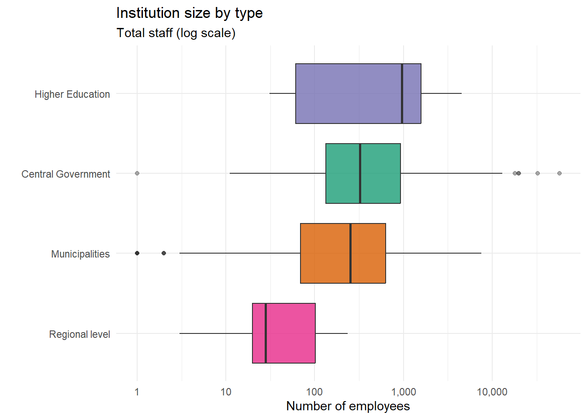
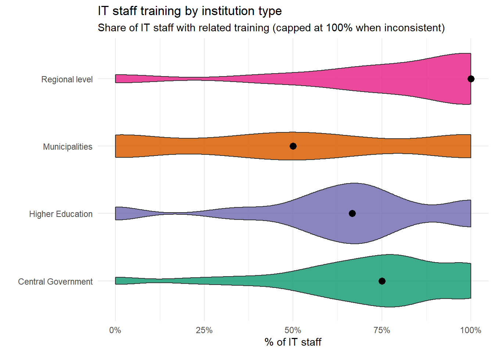
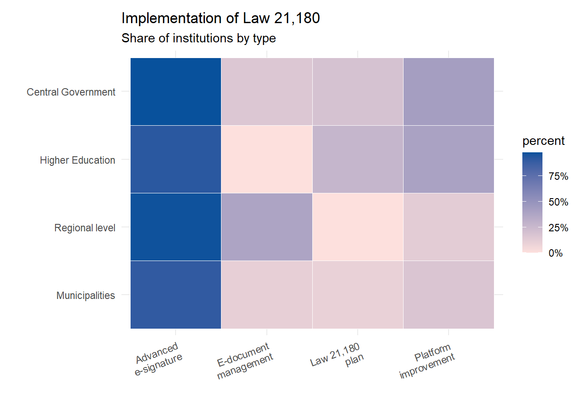
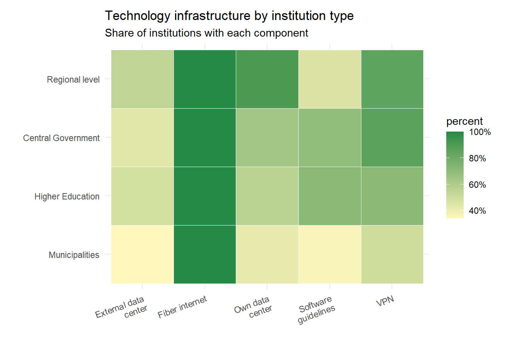
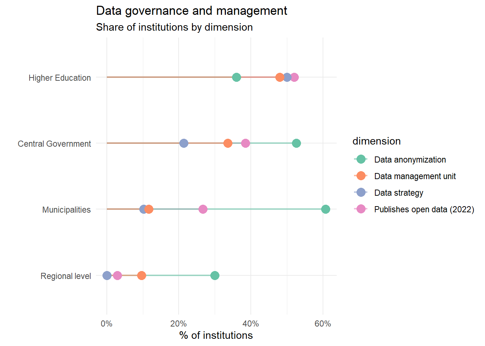
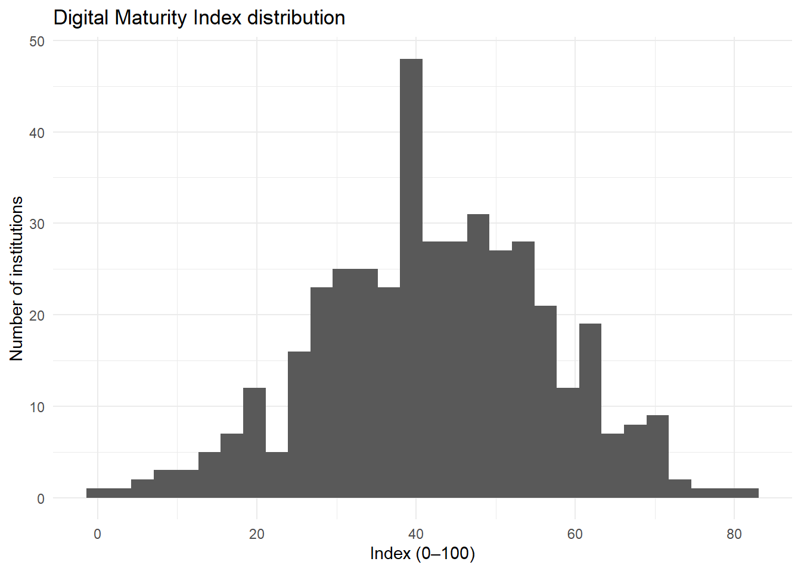
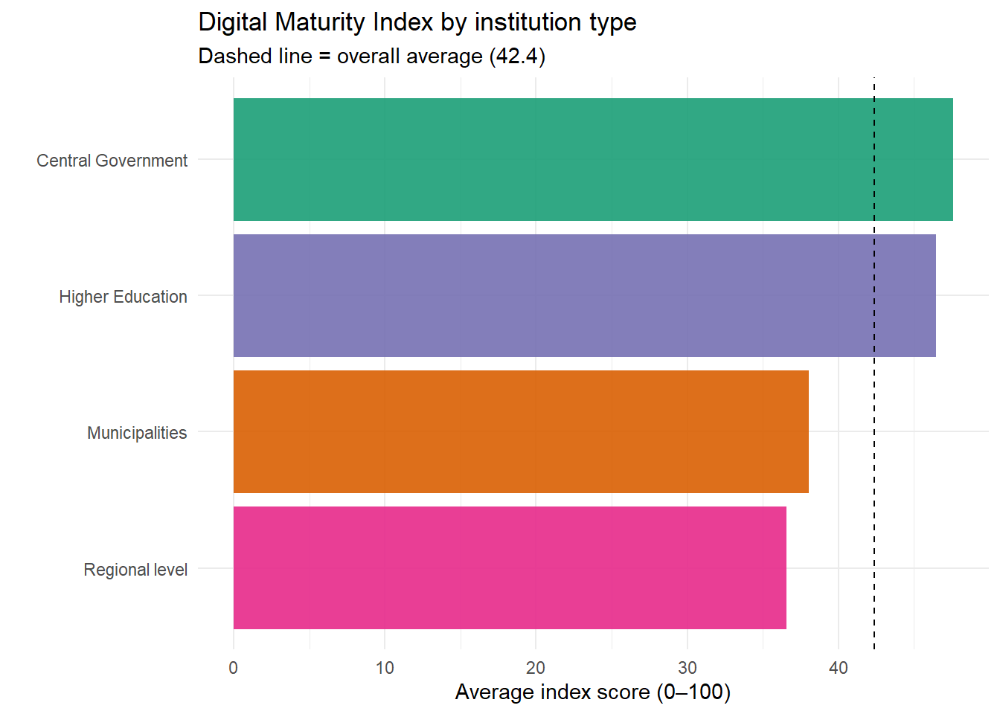

Code
library(tidyverse)
library(scales)
library(forcats)
source("scripts/analisis_gob_digital.R")Analysis of the Digital Government Indicators Study 2023 (reference year 2022)
library(tidyverse)
library(scales)
library(forcats)
source("scripts/analisis_gob_digital.R")The results show a public sector with unequal digital capacity. Institutions vary a lot in size, and staffing levels are much lower in regional and municipal organizations. However, in all institution types, internal IT capacity is limited: the median share of IT staff is only 1–2% of total employees. This constraint is more serious in municipalities, where there is also a human capital gap: around half of IT staff do not have training directly related to IT.
Together, these patterns reduce the operational sustainability of digital transformation (development, maintenance, security, and interoperability), especially in territorial institutions.
On the regulatory side, Law 21,180 has promoted gradual progress since 2019. But implementation looks more instrumental than strategic: adoption is higher for mandatory tools like electronic signature, while more complex components—electronic document management, platform modernization, and institutional implementation plans—show delays.
There is also still low maturity in data governance. Even though data anonymization shows relevant progress, institutionalization is limited (few formal strategies, responsible units, and consistent open data policies). This restricts the strategic use of information for decisions and digital public services. In short, the impact of Law 21,180 is still shaped by structural gaps in staffing, skills, and governance, especially in smaller and territorial institutions.
Law 21,180 on Digital Transformation of the State aims to digitalize the full cycle of administrative procedures, improving efficiency, traceability, and transparency. Its implementation has been progressive since 2019, recognizing that institutions have different capacities.
From March 1, 2024, the Digital Government Secretariat (SGD) in the Ministry of Finance has a central role in proposing the Digital Government strategy and coordinating its implementation.
This report uses data from the Digital Government Indicators Study 2023 (reference year 2022) to describe gaps and progress in key dimensions of digital transformation, comparing results by institution type.
The goal is to analyze how prepared public institutions in Chile are—by institutional type—to sustain digital transformation, and in which dimensions the main gaps appear.
The dataset comes from the Digital Government Indicators Study 2023 (reference year 2022), available on the Chilean open data portal.
Coverage: State Administration Bodies (OAE) involved in implementing Law 21,180.
Design: online survey with closed questions applied to public institutions (quantitative approach).
We selected key variables for analysis, then standardized formats and recoded special values.
Several numeric variables were stored as text. The dataset also includes values coded as #s.i. (no information) and #n.a. (not applicable), especially in staffing and technology infrastructure variables.
These values were recoded as missing data (NA) to ensure correct interpretation of indicators and to avoid distortions in descriptive analysis. For proportional indicators, we used only observations with valid information, without imputing missing values.
Total staff size is highly heterogeneous across institution types. This matters when interpreting implementation capacity and comparing institutions.
Overall, the institutional ecosystem is very unequal in size, which directly affects the ability to build internal and specialized technology teams.
p_tamano
We measure the percentage of IT staff with related training (non-university ICT + university science/technology). Academic research on public sector digital transformation shows that human capacities—leadership, technical skills, and governance—are key success factors, especially at territorial level.
Main findings:
Regional level: high median (≈80–90%), with important dispersion.
Central Government: medium-high values (≈70–80%).
Higher Education: concentrated around ≈60–70%.
Municipalities: lowest levels, medians close to 50%.
Values above 100% appear in some cases, suggesting inconsistencies in reporting or occupational classification.
Therefore, there is a clear gap in specialized training, particularly in municipalities, which may affect interoperability, security, system development, and data governance.
From the previous points, we observe three main gaps: institutional size, technology staffing, and capabilities.
p_formacion
Data quality note. Some institutions reported a number of IT staff with related training higher than their total IT staff. To avoid distortion, values above 100% were capped at 100% and flagged as inconsistent records.
We summarize key instruments linked to implementation: institutional plan, advanced electronic signature, document management, and platform improvement. Law 21,180 sets the framework for digital administrative procedures and its progressive rollout across OAE institutions.
Observed pattern:
High adoption of mandatory and cross-cutting tools → electronic signature
Partial progress in structural components → document management / platforms
Weak strategic institutionalization → formal implementation plans
Overall, the results suggest that implementation has been more instrumental than organizational, and strongly shaped by internal capacities (staffing, skills, and governance).
p_ley
We evaluate availability of: fiber connection, VPN, own data center, external data center, and technical software guidelines.
General results:
Basic connectivity (fiber optic): high and relatively homogeneous (an enabling base).
Advanced infrastructure: relevant gaps, especially in municipalities (VPN, standards, external data centers).
Central government and higher education show higher levels of infrastructure and standards, reflecting stronger investment and management capacity.
In conclusion, improvements in connectivity coexist with delays in components needed for secure, integrated, and sustainable operation. This directly affects effective implementation of Law 21,180.
p_infra
We analyze open data publication, existence of a data strategy, anonymization, and the presence of a data management unit.
Main results:
Data anonymization: strongest cross-cutting progress (especially municipalities and central government).
Formal data management unit: medium levels, mainly in central government and higher education.
Institutional data strategy: very low overall; almost absent in municipalities and regional institutions.
Open data publication: partial progress, with territorial lag.
As a result, we see progress driven by regulatory demands (e.g., anonymization), but there is still a structural deficit in strategies, responsible units, and formal governance.
p_datos
We built a synthetic index using five strategic dimensions:
| Dimension | Description |
| D1 | Institutional capacities |
| D2 | IT capacities |
| D3 | Implementation of Law 21,180 |
| D4 | Technology infrastructure |
| D5 | Open data and governance |
The final index is the average of the five normalized dimensions, scaled to 0–100. The “digital services” dimension was excluded due to insufficient information for comparability.
D1 – Institutional capacities
proporcion_ti_en_institucion (0–1)
proporcion_ti_formacion (0–1)
D2 – IT capacities
tiene_area_ti (binary)
total_funcionarios_ti (continuous, normalized)
D3 – Implementation of Law 21,180
plan_ley_21180
firma_electronica_avanzada
politica_gestion_documental
plan_mejora_plataformas
D4 – Infrastructure
internet_fibra_optica
tiene_vpn
data_center_propio
data_center_externo
lineamientos_tecnicos_software
D5 – Data and governance
publica_datos_abiertos_2022
estrategia_datos
anonimiza_datos
area_gestion_datos
resumen_indice_total# A tibble: 1 × 5
n promedio mediana p25 p75
<int> <dbl> <dbl> <dbl> <dbl>
1 422 42.4 42.2 33.1 52.3Digital maturity in the public sector is in a mid–low range (average 42.4). Half of institutions are roughly between 33 and 52 points, showing partial progress.
p_hist_indice <- ggplot(df_en, aes(x = indice_madurez_digital)) +
geom_histogram(bins = 30) +
labs(
title = "Digital Maturity Index distribution",
x = "Index (0–100)",
y = "Number of institutions"
) +
theme_minimal()
p_hist_indice
Central Government and Higher Education are above the overall average, while municipalities and regional institutions are clearly below, showing a structural gap in digital capacity.
ggplot(indice_por_tipo,
aes(x = fct_reorder(tipo_institucion_en, promedio),
y = promedio,
fill = tipo_institucion_en)) +
geom_col(alpha = 0.9) +
geom_hline(yintercept = resumen_indice_total$promedio, linetype = "dashed") +
scale_fill_manual(values = pal_tipo) +
coord_flip() +
labs(
title = "Digital Maturity Index by institution type",
subtitle = paste0("Dashed line = overall average (", round(resumen_indice_total$promedio, 1), ")"),
x = "",
y = "Average index score (0–100)"
) +
theme_minimal() +
theme(legend.position = "none")
indice_por_tipo# A tibble: 4 × 4
tipo_institucion_en n promedio mediana
<fct> <int> <dbl> <dbl>
1 Central Government 173 47.6 48.7
2 Higher Education 27 46.5 48.2
3 Municipalities 188 38.0 38.7
4 Regional level 34 36.6 36.7The results confirm that digital transformation in the Chilean public sector is heterogeneous and unequal. The gaps are explained by structural factors: institutional size, infrastructure availability, IT staffing and specialization, and the ability to plan and govern.
In this context, Law 21,180 has generated important regulatory progress, but its impact on institutional digital maturity is still shaped by organizational limits and technical capacity constraints, especially in smaller and territorial institutions.